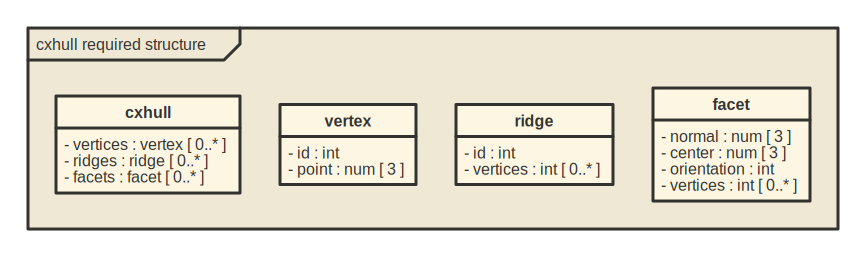
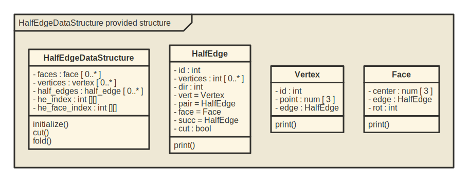

The goal of halfedgedatastructr is to implement in R material from the informal discussions of the half-edge data structure at https://jerryyin.info/geometry-processing-algorithms/half-edge/ and at https://www.flipcode.com/archives/The_Half-Edge_Data_Structure.shtml, together with additional support for spanning trees.
Structure
This R implementation ingests information in the following form, which is a subset of the form produced by the cxhull::cxhull function (https://cran.r-project.org/package=cxhull):

An instance of this structure is the following tetetrahedron, using the coordinates from https://en.wikipedia.org/wiki/Tetrahedron#Cartesian_coordinates.
tet <- list(
vertices = list(
list(id = 1, point = c(1,1,1)),
list(id = 2, point = c(1,-1,-1)),
list(id = 3, point = c(-1,1,-1)),
list(id = 4, point = c(-1,-1,1))
),
ridges = list(
list(id = 1, vertices = c(1,3)), list(id = 2, vertices = c(2,3)),
list(id = 3, vertices = c(1,2)), list(id = 4, vertices = c(3,4)),
list(id = 5, vertices = c(1,4)), list(id = 6, vertices = c(2,4))
),
facets = list(
list(normal = c(sqrt(3)/3,sqrt(3)/3,-sqrt(3)/3), center = c(1/3,1/3,-1/3),
orientation = -1, vertices = c(2,1,3)),
list(normal = c(-sqrt(3)/3,sqrt(3)/3,sqrt(3)/3), center = c(-1/3,1/3,1/3),
orientation = 1, vertices = c(4,1,3)),
list(normal = c(-sqrt(3)/3,-sqrt(3)/3,-sqrt(3)/3), center = c(-1/3,-1/3,-1/3),
orientation = -1, vertices = c(4,2,3)),
list(normal = c(sqrt(3)/3,-sqrt(3)/3,sqrt(3)/3), center = c(1/3,-1/3,1/3),
orientation = 1, vertices = c(4,2,1))
)
)This is converted into a half-edge data structure, which has the following form: 
Here is an example, which lists the identifiers for the half-edges in the structure:
he_ds <- HalfEdgeDataStructure$new(tet)
hes <- he_ds$half_edges
unlist(lapply(1:length(hes), function(k) {
hes[[k]]$ix
}))Spanning Trees
Generating spanning trees for polygons is a somewhat guarded art, and there doesn’t seem to be code for that in R. Fortunately SAGE provides help for this. The following SAGE code (easily extended to other polygons) generates all (and only) the spanning trees for the tetrahedron:
The output of the code is this vector of 16 graph6-encoded trees:
| CF | CL | CM | CR | CX | CY | CU | C[ | Cb | Ch | Ci | Cd | Ck | Cp | Cq | Cs |
which can be converted to the required adjacency matrix form, to then be used by the cut and fold operations:
adj_mats <- rgraph6::adjacency_from_graph6(trees)
he_ds$cut <- adj_mats[[1]]
hes <- he_ds$half_edges
unlist(lapply(1:length(hes), function(k) {
ifelse(hes[[k]]$cut, hes[[k]]$ix, NA)
}))
he_ds2 <- HalfEdgeDataStructure$new(tet)
he_ds2$fold <- adj_mats[[16]]
hes2 <- he_ds2$half_edges
unlist(lapply(1:length(hes2), function(k) {
ifelse(hes2[[k]]$cut, hes2[[k]]$ix, NA)
}))So cutting with tree 1 is the same as folding with tree 16.
This duality will be explored further in one of the vignettes.
Installation
You can install the development version of halfedgedatastructr from GitHub with:
# install.packages("devtools")
devtools::install_github("JeffLansing/halfedgedatastructr")